Chapitre 2 : Régression linéaire simple (RLS)
Économétrie (ECON0212)
Natalia Bermúdez
HEC Liège
September 2026
Recap — Analyse de données
Wooclap
lien de participation (code : EFAIRJX)
Aujourd’hui — on commence l’économétrie ✌️
Introduction au modèle de régression linéaire simple et à l’estimation par moindres carrés ordinaires (MCO).
Application empirique : taille de la classe et performance des élèves.
Gardez à l’esprit que nous cherchons à découvrir des relations causales.
Plan du cours
- Introduction I : l’intuition derrière la droite de régression
- Introduction II : formalisation modèle de régression linéaire simple
- Estimation par moindres carrés ordinaires (MCO)
- Le modèle de régression linéaire simple (et hypothèses)
- Estimation en Stata
- Propriétés algébriques de l’estimateur des MCO
Taille de la classe et performance des élèves
Quelles politiques conduisent à une amélioration de l’apprentissage des élèves ?
- La réduction de la taille des classes est au cœur des débats politiques depuis des décennies.
- Des classes plus petites pourraient permettre aux enseignants de consacrer davantage de temps à chaque élève, mais leur mise en place est coûteuse.
Application : données d’un célèbre article de Joshua Angrist et Victor Lavy (1999)
Obtenues du cours de Raj Chetty et Greg Bruich
Contexte
- Classes d’élèves de 10-11 ans des écoles élémentaires publiques juives en Israël en 1991
Données
- Résultats aux tests nationaux qui mesurent les compétences en mathématiques et en lecture (hébreu). Les scores bruts sont échelonnés de 1 à 100.
- Caractéristiques des classes/écoles.
Exercice 1 : découvrir les données
Ouvrir la base
grade5.dtaqui se trouve dans le dossierexercicede ce chapitre (sur LOLA).Examiner les données :
- Quelle est l’unité (l’entité) d’observation, c’est-à-dire à quoi correspond chaque ligne ?
- Combien d’observations y a-t-il ?
- Regardez la base. Quelles variables avons-nous ? À quoi correspondent les variables
avgmathetavgverb?
Avez-vous un a priori sur la relation réelle (linéaire) entre la taille des classes et les résultats des élèves ? Que feriez-vous pour obtenir un premier aperçu ?
Taille de la classe et performance des élèves — scatter plot
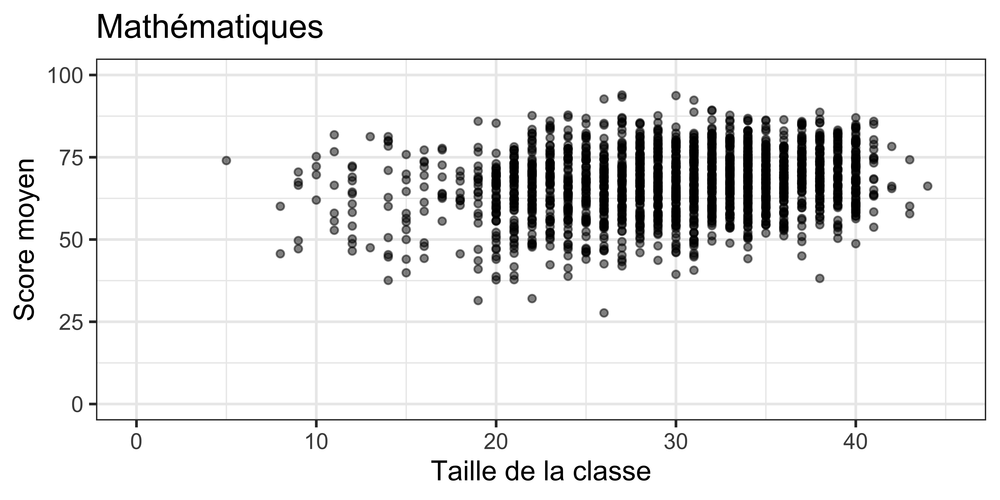
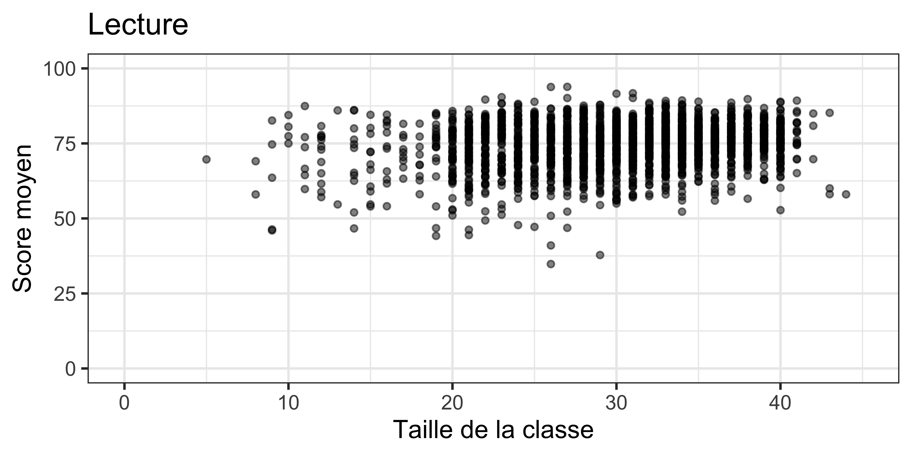
- Suggère une association plutôt positive.
- Comment pouvons-nous visualiser cette relation plus clairement ?
Taille de la classe et performance des élèves — binned scatter plot
Score moyen par taille de classe.
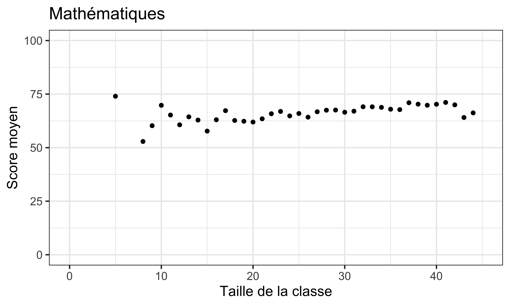
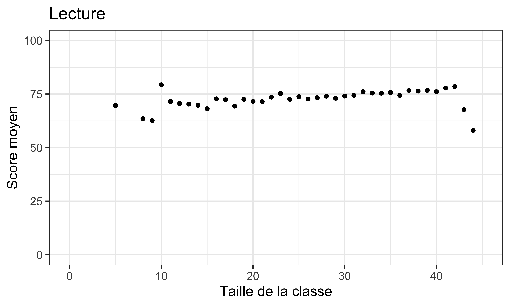
Taille de la classe et performance des élèves — droite de régression
Concentrons-nous sur les résultats en mathématiques !
Comment résumer (et visualiser) la relation entre les deux variables ?
- Une possibilité : tracer une droite qui résume au mieux le nuage de points.
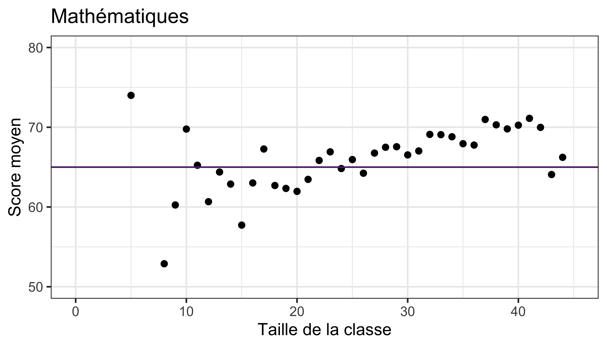
- Mais quelle droite choisir ?
- Celle-ci est horizontale : elle suppose que le score moyen en mathématiques ne varie pas avec la taille de la classe. 😩
Taille de la classe et performance des élèves — droite de régression
Tracer une droite qui résume au mieux le nuage de points.
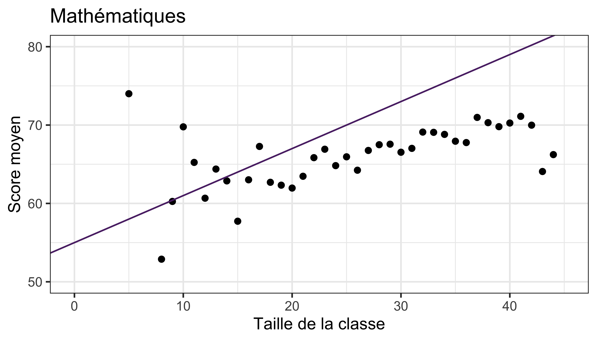
- Celle-ci ?
- Un peu mieux ! Elle a une pente et une ordonnée à l’origine 😐
- Il nous faut une règle de décision !
- 🎯 À vous de trouver la meilleure droite !
Plan du cours
- Introduction I : l’intuition derrière la droite de régression
- Introduction II : formalisation modèle de régression linéaire simple
- Estimation par moindres carrés ordinaires (MCO)
- Le modèle de régression linéaire simple (et hypothèses)
- Estimation en Stata
- Propriétés algébriques de l’estimateur des MCO
Régression linéaire simple — formalisation
Nous nous intéressons à la relation entre deux variables :
- Une variable expliquée (y)
- Également appelée variable dépendante, variable expliquée, variable de résultat, variable prédite, variable endogène :
- Score moyen en mathématiques
- Également appelée variable dépendante, variable expliquée, variable de résultat, variable prédite, variable endogène :
- Une variable explicative (x)
- Également appelée variable indépendante ou régresseur, variable prédictive, variable exogène, variable de contrôle :
- Taille de la classe
- Également appelée variable indépendante ou régresseur, variable prédictive, variable exogène, variable de contrôle :
- Pour chaque classe i (c.-à-d. chaque observation), nous observons à la fois x_i et y_i.
Régression linéaire simple — formalisation
- Pour estimer le modèle de régression, on a besoin de données.
- Échantillon aléatoire de n observations :
- (x_1, y_1) \longleftarrow Observation 1
- (x_2, y_2) \longleftarrow Observation 2
- \cdots
- (x_n, y_n) \longleftarrow Observation n
- De manière équivalente : \{ (x_i, y_i) : i = 1, \cdots, n \}
Régression linéaire simple — formalisation
- Nous cherchons à résumer la relation entre x et y à l’aide d’une droite (pour l’instant).
- L’équation d’une telle droite, avec une ordonnée à l’origine b_0 et une pente b_1, est : \widehat{y}_i = b_0 + b_1 x_i
- \widehat{y}_i est la valeur prédite (prédiction) de y pour l’observation i, à partir de cette droite (c.-à-d. de notre modèle).
Mais comment choisir b_0 et b_1 pour que la droite représente au mieux les données ?
[Rappel] Qu’est-ce qu’une droite ?
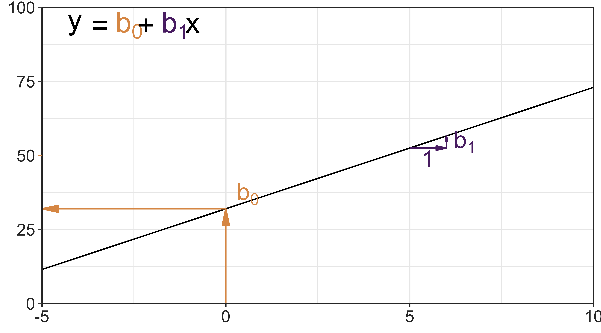
Régression linéaire simple : résidus
- Si tous les points étaient sur la droite, alors \widehat{y}_i = y_i :
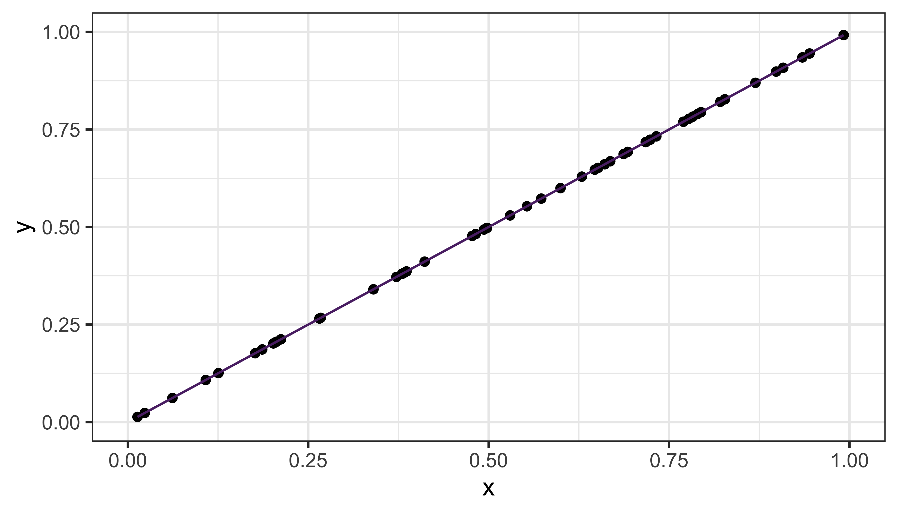
- Une prédiction parfaite ! Il n’y a pas d’erreur de prédiction, le modèle explique parfaitement les observations.
Régression linéaire simple : résidus
- Si tous les points étaient sur la droite, alors \widehat{y}_i = y_i :
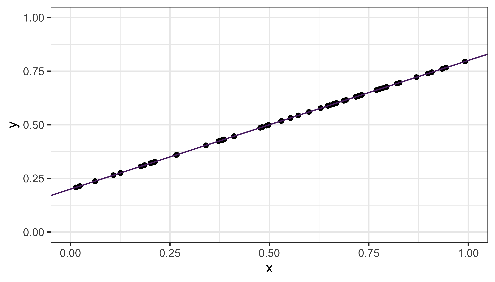
- Une prédiction parfaite ! Il n’y a pas d’erreur de prédiction, le modèle explique parfaitement les observations.
Régression linéaire simple : résidus
- Si tous les points étaient sur la droite, alors \widehat{y}_i = y_i.
- Dans la plupart des cas, la variable dépendante (y) n’est pas parfaitement expliquée par la variable indépendante choisie (x) :
\widehat{y}_i \neq y_i
- L’écart entre la valeur observée et la valeur prédite \Rightarrow résidu
- Pour chaque observation i, on note ce résidu \hat{e}_i :
\hat{e}_i = y_i - \widehat{y}_i
- Les données réelles peuvent donc être écrites comme prédiction + résidu : ::: {.center} y_i = \widehat y_i + \hat{e}_i = b_0 + b_1 x_i + \hat{e}_i :::
Régression linéaire simple : résidus
- Les données réelles peuvent donc être écrites comme prédiction + résidu :
y_i = \widehat y_i + \hat{e}_i = b_0 + b_1 x_i + \hat{e}_i
Régression linéaire simple : graphiquement
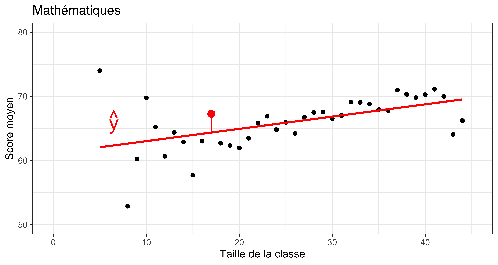
Régression linéaire simple : graphiquement
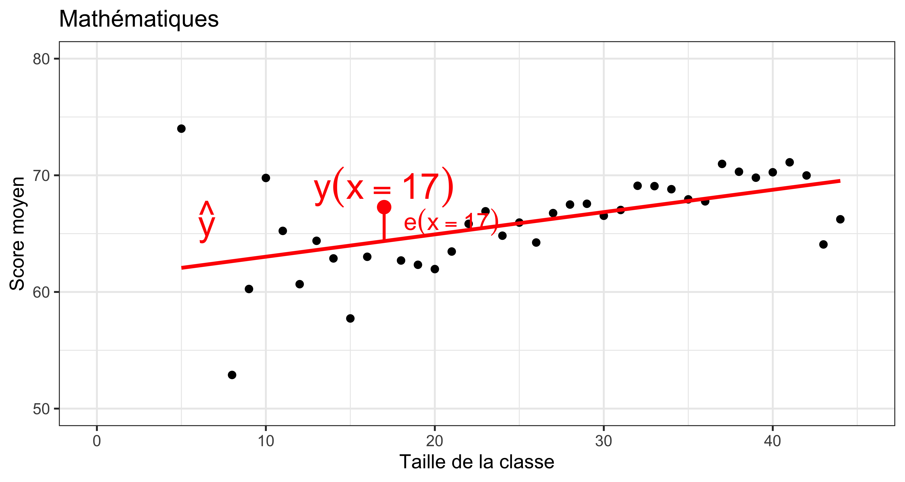
Régression linéaire simple : le terme d’erreur
- Le modèle économétrique vise à expliquer y en fonction de x (\rightarrow observé) :
y_i = \beta_0 + \beta_1 x_i + e_i
- Mais x n’est généralement pas le seul facteur qui explique y.
- On regroupe dans le terme d’erreur e_i tous les autres facteurs qui affectent y_i :
y_i = \underbrace{\beta_0 + \beta_1 x_i}_{\text{partie expliquée par } x_i} + \underbrace{e_i}_{\text{autres facteurs}}
- Exemple : … e_i peut inclure les caractéristiques de l’enseignant, les capacités de l’élève, son environnement familial, etc.
Régression linéaire simple : graphiquement
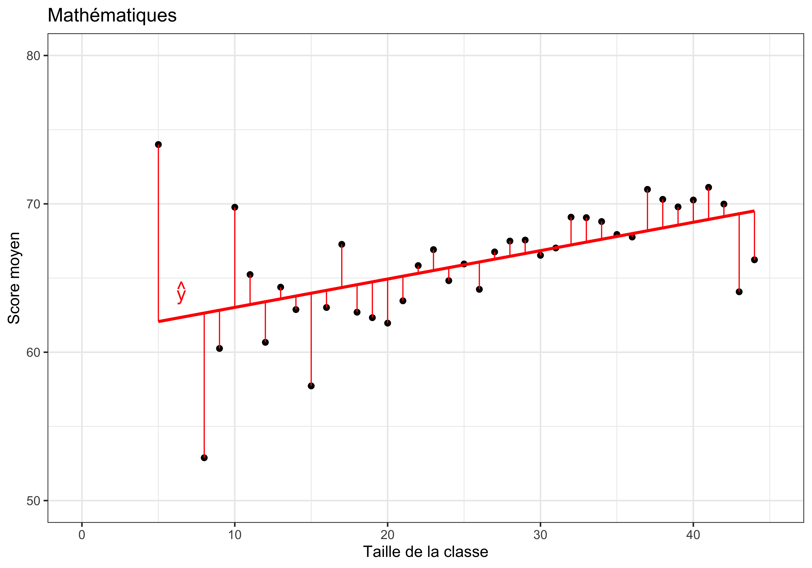
Comment choisir la droite qui représente le mieux nos données ? Quel critère de minimisation pouvons-nous utiliser ?
Plan du cours
- Introduction I : l’intuition derrière la droite de régression
- Introduction II : formalisation modèle de régression linéaire simple
- Estimation par moindres carrés ordinaires (MCO)
- Le modèle de régression linéaire simple (et hypothèses)
- Estimation en Stata
- Propriétés algébriques de l’estimateur des MCO
Estimation par Moindres Carrés Ordinaires (MCO)
En anglais : Ordinary Least Squares (OLS).
- Les erreurs de signes différents (+/-) s’annulent ; nous considérons donc les résidus au carré : \forall i \in [1, n], \quad \hat{e}_i^2 = (y_i - \widehat y_i)^2 = (y_i - b_0 - b_1 x_i)^2
- Choisir (b_0, b_1) de manière à ce que \sum_{i=1}^n \hat{e}_i^2 = \hat{e}_1^2 + \dots + \hat{e}_n^2 soit aussi petit que possible, i.e. : \min_{b_0, b_1} \sum_{i=1}^n \hat{e}_i^2 \qquad \text{ou} \qquad \min_{b_0, b_1} \sum_{i=1}^n (y_i - b_0 - b_1 x_i)^2
Estimation par Moindres Carrés Ordinaires (MCO)
Les erreurs de signes différents (+/-) s’annulent ; nous considérons donc les résidus au carré : \forall i \in [1, n], \quad \hat{e}_i^2 = (y_i - \widehat y_i)^2 = (y_i - b_0 - b_1 x_i)^2
Choisir (b_0, b_1) de manière à ce que \sum_{i=1}^n \hat{e}_i^2 = \hat{e}_1^2 + \dots + \hat{e}_n^2 soit aussi petit que possible.
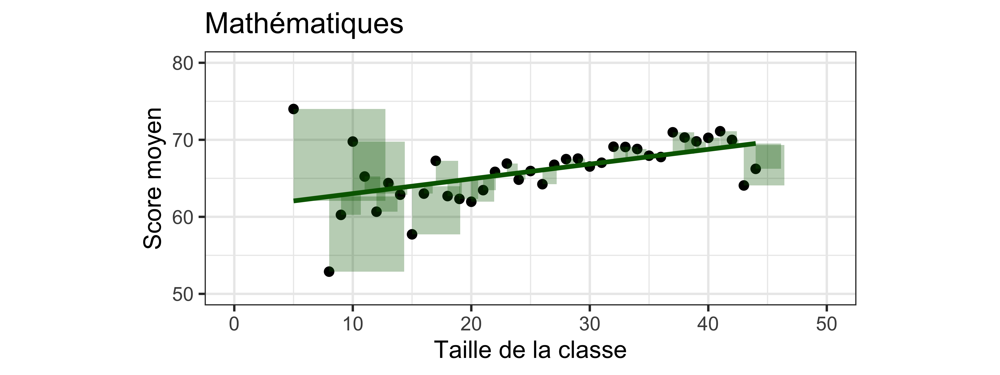
Estimation par Moindres Carrés Ordinaires (MCO)
Moindres Carrés Ordinaires (MCO) : formule des coefficients
- MCO : méthode d’estimation consistant à minimiser la somme des résidus au carré.
- Fournit des solutions uniques à ce problème de minimisation.
- Alors, quelles sont les formules pour b_0 (constante) et b_1 (pente) ?
- Dans le cas où nous n’avons qu’une seule variable indépendante :
Pente : \quad b_1 = \dfrac{\operatorname{cov}(x,y)}{\operatorname{var}(x)} = \dfrac{\sum_{i=1}^n (x_i-\bar{x})(y_i-\bar{y})} {\sum_{i=1}^n (x_i-\bar{x})^2}
Constante : \quad b_0 = \bar{y} - b_1\bar{x}
- Démonstration : résolution du problème de minimisation du carré des erreurs. Cf. vidéo.
Moindres Carrés Ordinaires (MCO) — interprétation
Pour l’instant, supposons que les variables dépendante (y) et indépendante (x) sont numériques.
Ordonnée à l’origine (b_0) : valeur prédite de y (\widehat{y}) lorsque x = 0 (ou constante).
Pente (b_1) : le changement prédit, en moyenne, dans la valeur de y associé à une augmentation d’une unité de x. \frac{\Delta y}{\Delta x} = b_1
- I.e., de combien la variable dépendante change-t-elle si la variable indépendante augmente d’une unité ?
- Les unités de x ont de l’importance pour l’interprétation (et la magnitude !) de b_1.
- Vous devez être explicite sur l’unité de x.
Moindres Carrés Ordinaires (MCO) — interprétation causale ?
⚠️ Nous utilisons le terme « associé », en évitant clairement d’interpréter b_1 comme l’impact causal de x sur y.
Pour faire une telle affirmation, certaines conditions spécifiques doivent être remplies.
(La semaine prochaine !)
Plan du cours
- Introduction I : l’intuition derrière la droite de régression
- Introduction II : formalisation modèle de régression linéaire simple
- Estimation par moindres carrés ordinaires (MCO)
- Le modèle de régression linéaire simple (et hypothèses)
- Estimation en Stata
- Propriétés algébriques de l’estimateur des MCO
[Définition] Modèle de la régression linéaire simple
Modèle économétrique (RAPPEL !)
y_i = \beta_0 + \beta_1 x_i + e_i
- y_i : variable dépendante / expliquée / de résultat
- x_i : variable indépendante / explicative / régresseur / covariable
- e_i : terme d’erreur / inobservé
Chemin de pensée
1. Intuition
« Ajuster une droite aux données »
2. Estimation par MCO
Choisir b_0 et b_1 qui minimisent la somme des carrés des résidus
3. Hypothèses du modèle
Sur le modèle de population : y_i = \beta_0 + \beta_1 x_i + e_i
4. Propriétés des estimateurs MCO
Algébriques (aujourd’hui) \quad\longrightarrow\quad Statistiques (chapitre 5)
[Hypothèse 1] Linéarité dans les paramètres
y_i = \beta_0 + \beta_1 x_i + e_i
[H1] Modèle linéaire dans ses paramètres.
Intuition :
- Sans e_i, c’est l’équation d’une droite.
Illustration :
- y_i = b_0 + b_1 \sqrt{x_i} + e_i et y_i = b_0 + b_1 x_i^2 + e_i sont aussi linéaires (dans les paramètres).
[H1] Linéarité dans les paramètres : visualiser les données !
La covariance, la corrélation et la régression simple par OLS ne mesurent que des relations linéaires entre deux variables.
2 variables ayant des corrélations et droites de régression identiques peuvent avoir un aspect massivement différent.
- Comment est-ce possible ?

[H1] Linéarité dans les paramètres : le quartet d’Anscombe
Francis Anscombe (1973) propose 4 bases de données ayant des statistiques identiques. Mais regardez !
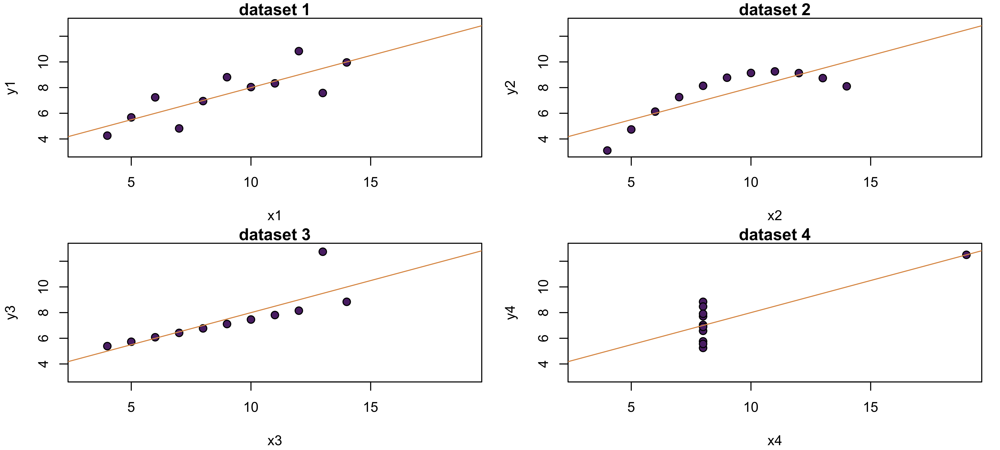
| dataset | cov | var(y) | var(x) |
|---|---|---|---|
| 1 | 5.501 | 4.127 | 11 |
| 2 | 5.500 | 4.128 | 11 |
| 3 | 5.497 | 4.123 | 11 |
| 4 | 5.499 | 4.123 | 11 |
Relations non linéaires dans les données ?
Nous pouvons prendre en compte les relations non linéaires dans les régressions.
On peut, par exemple, ajouter un terme d’ordre supérieur comme ceci : y_i = \beta_0 + \beta_1 x_i + \beta_2 x_i^2 + e_i
C’est alors une régression linéaire multiple (prochain cours !).
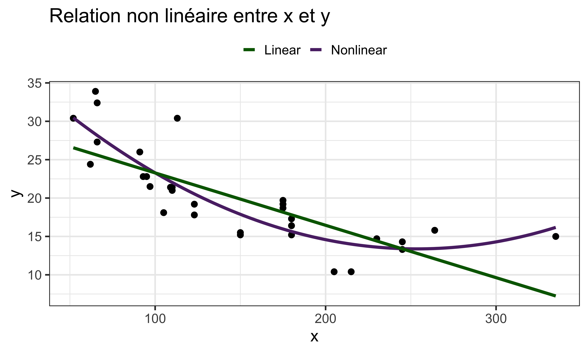
[Hypothèse 2] Échantillon aléatoire
- Le modèle décrit une relation dans la population :
y_i = \beta_0 + \beta_1 x_i + e_i
Mais nous n’observons pas toute la population : nous disposons d’un échantillon de n observations: (x_1,y_1),\;(x_2,y_2),\;\ldots,\;(x_n,y_n)
Nous utilisons cet échantillon pour estimer les paramètres inconnus \beta_0 et \beta_1 (i.e., b_0 et b_1).
[H2] Échantillon aléatoire : \{(x_i,y_i): i=1,\ldots,n\}, où les (x_i,y_i) sont indépendants et identiquement distribués (i.i.d.).
[H2] Échantillon aléatoire
[H2] Échantillon aléatoire : \{(x_i,y_i): i=1,\ldots,n\}, où les (x_i,y_i) sont indépendants et identiquement distribués (i.i.d.).
Cela signifie que :
Indépendants : chaque paire (x_i,y_i) est indépendante de (x_j,y_j) pour i \neq j.
Identiquement distribués : toutes les observations sont tirées de la même distribution de population.
\Rightarrow Avec les autres hypothèses du modèle, elle permet notamment d’établir la consistance et d’étudier les propriétés asymptotiques des estimateurs MCO.
[Hypothèse 3] Indépendance en moyenne des erreurs
y_i = \beta_0 + \beta_1 x_i + e_i
- Du fait de l’inclusion de la constante \beta_0, on fait l’hypothèse que :
E(e) = 0
En conséquence :
[H3] La moyenne des erreurs est indépendante de x (en moyenne) : E(e \mid x) = E(e) = 0
Et si E(e \mid x) \neq 0 ?
\textrm{salaire}_i = \beta_0 + \beta_1 \,\textrm{éducation}_i + e_i
Il faut réfléchir à ce qui peut être contenu dans e_i : ambition, capacités, santé, conditions du marché du travail local, etc.
L’hypothèse E(e \mid x)=0 implique que, quel que soit le niveau d’éducation :
E(e \mid \textrm{décrocheur scolaire}) = E(e \mid \textrm{diplômé d'un master}) = 0
- À l’inverse, E(e \mid x)\neq0 signifie que certains facteurs contenus dans e sont systématiquement liés au niveau d’éducation.
- Par exemple, si l’ambition influence le salaire et est liée au niveau d’éducation, alors E(e\mid x)\neq0.
- L’hypothèse E(e\mid x)=0 garantit que les estimateurs MCO sont non biaisés !
[Recap Hypothèses] Régression linéaire simple
y_i = \beta_0 + \beta_1 x_i + e_i
[H1] Modèle linéaire dans ses paramètres.
[H2] Échantillon aléatoire : \{(x_i, y_i) : i = 1, \cdots, n\} où les (x_i, y_i) sont i.i.d.
[H3] Moyenne conditionnelle nulle : E(e \mid x) = 0.
[H4] Variabilité de x : x ne doit pas être constant dans l’échantillon (x_i \neq c).
- Sans variation de x, on ne peut pas estimer la relation entre x et y.
H1-H4 garantisent que les estimateurs (b_0, b_1) ont des propriétés statistiques satisfaisantes (existence et calcul du MCO).
Une 5ᵉ hypothèse : vers le théorème de Gauss-Markov
- [H5] Homoscédasticité : Var(e \mid x) est constante (ne dépend pas de x).
[H1]-[H5] ensemble forment le théorème de Gauss-Markov : sous ces 5 hypothèses, l’estimateur MCO est BLUE (Best Linear Unbiased Estimator).
Link with statistical properties:
Sans biais (\mathbb{E}(b_0)=\beta_0, \mathbb{E}(b_1)=\beta_1) : déjà garanti par [H1]-[H4].
Efficace (variance minimale parmi tous les estimateurs linéaires non biaisés) : nécessite en plus [ H5].
À suivre au chapitre 5 …
Plan du cours
- Introduction I : l’intuition derrière la droite de régression
- Introduction II : formalisation modèle de régression linéaire simple
- Estimation par moindres carrés ordinaires (MCO)
- Le modèle de régression linéaire simple (et hypothèses)
- Estimation en Stata
- Propriétés algébriques de l’estimateur des MCO
MCO (OLS) avec Stata
En
Stata, les régressions OLS sont estimées à l’aide de la fonctionregress(reg).Voici comment cela fonctionne :
Taille de la classe et performance des élèves
Estimons le modèle suivant par MCO : \textrm{average math score}_i = b_0 + b_1 \, \textrm{class size}_i + e_i
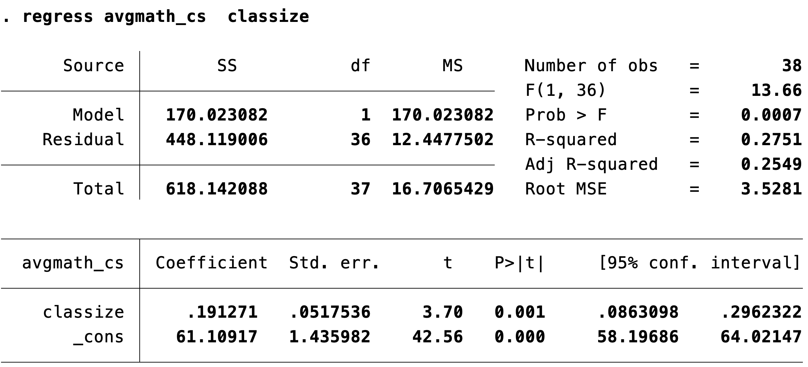
Moindres Carrés Ordinaires (MCO) : prédiction
Cela implique (sans l’indice _i par simplicité) :
\begin{aligned} \widehat y &= b_0 + b_1 x \\ \widehat{\text{average math score}} &= b_0 + b_1 \cdot \text{class size} \\ \widehat{\text{average math score}} &= 61.11 + 0.19 \cdot \text{class size} \end{aligned}
Moindres Carrés Ordinaires (MCO) : prédiction
Quel est le score moyen prédit pour une classe de 15 élèves ?
\begin{aligned} \widehat{\text{average math score}} &= 61.11 + 0.19 \cdot 15 \\ \widehat{\text{average math score}} &= 63.98 \end{aligned}
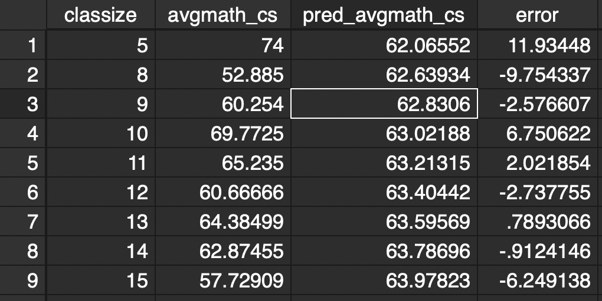
Exercice 2 : régression par MCO
Après avoir agrégé les données au niveau de la taille de la classe avec le code suivant :
Régresser le score moyen en lecture (verbal) (variable dépendante) sur la taille de la classe (variable indépendante). Interpréter les coefficients.
Calculer les coefficients OLS b_0 et b_1 de la régression précédente en utilisant les formules vues plus haut. (Indice : vous devez utiliser les commandes
corretsummarize.)Quel est le score de lecture moyen prédit quand la taille de la classe est égale à 0 ? (est-ce que ce chiffre a du sens ?!)
Quel est le score de lecture moyen prédit quand la taille de la classe est égale à 30 ?
Plan du cours
- Introduction I : l’intuition derrière la droite de régression
- Introduction II : formalisation modèle de régression linéaire simple
- Estimation par moindres carrés ordinaires (MCO)
- Le modèle de régression linéaire simple (et hypothèses)
- Estimation en Stata
- Propriétés algébriques de l’estimateur des MCO
Propriétés de l’estimateur MCO
- L’estimateur MCO possède des propriétés algébriques de base.
- Ces propriétés ne dépendent pas d’hypothèses concernant les propriétés statistiques de y, x ou e.
À partir de l’estimation par MCO, nous pouvons calculer :
Valeur prédite : \widehat y_i = b_0 + b_1 x_i
Résidus (estimés) : \hat e_i = y_i - b_0 - b_1 x_i = y_i - \bar y - b_1 (x_i - \bar x)
Droite de régression : \widehat y = b_0 + b_1 x
Propriétés algébriques de l’estimateur MCO : Prédictions et résidus
La moyenne (ou somme) des résidus est 0. \begin{aligned} \frac{1}{n} \sum_{i=1}^n \hat{e}_i &= \frac{1}{n} \sum_{i=1}^n (y_i - \widehat y_i) \\ &= \bar{y} - \frac{1}{n} \sum_{i=1}^n \widehat{y}_i = 0 \end{aligned}
Variable indépendante et résidus sont non corrélés (par définition). \operatorname{cov}(x_i, \hat{e}_i) = 0
La moyenne de \widehat{y}_i est égale à \bar{y}. \begin{aligned} \frac{1}{n} \sum_{i=1}^n \widehat{y}_i &= \frac{1}{n} \sum_{i=1}^n (b_0 + b_1 x_i) \\ &= b_0 + b_1 \bar{x} = \bar{y} \end{aligned}
Prédiction et résidus sont non corrélés. \begin{aligned} \operatorname{cov}(\widehat y_i, \hat{e}_i) &= \operatorname{cov}( b_0 + b_1 x_i, \hat{e}_i) \\ &= b_1 \operatorname{cov}(x_i, \hat{e}_i) = 0 \end{aligned} car \operatorname{cov}(a + cx, y) = c \, \operatorname{cov}(x, y).
Qualité d’ajustement (Goodness of Fit)
- Au niveau individuel i : y_i = \widehat y_i + \hat{e}_i. On en déduit la décomposition suivante :
SCT = SCE + SCR Variation totale = Expliquée par le modèle + Non expliquée par le modèle
- Cette décomposition repose sur les propriétés algébriques des MCO (#1 et #4) :
\Rightarrow Ces deux propriétés découlent des conditions du premier ordre du problème de minimisation des MCO.
Qualité d’ajustement (Goodness of Fit)
SCT = SCE + SCR Variation totale = Expliquée par le modèle + Non expliquée par le modèle
- SCT = \textrm{Somme des Carrés Totaux} = \sum_{i=1}^n (y_i - \bar y)^2
- Mesure le degré de dispersion des y_i dans l’échantillon.
- \operatorname{var}(y) = SCT / (n - 1)
- SCE = \textrm{Somme des Carrés Expliqués} = \sum_{i=1}^n (\widehat y_i - \bar y)^2
- Mesure le degré de dispersion des \hat y_i dans l’échantillon.
- \operatorname{var}(\hat y) = SCE / (n - 1)
- SCR = \textrm{Somme des Carrés des Résidus} = \sum_{i=1}^n \hat e_i^2
Qualité d’ajustement (Goodness of Fit) : coefficient de détermination (ou R^2)
- Le R^2 mesure l’adéquation du modèle aux données.
- Fraction de la variation de y qui est expliquée par x au sein de l’échantillon.
R^2 = \frac{\text{Variance expliquée}}{\text{Variance totale}} = \frac{SCE}{SCT} = 1 - \frac{SCR}{SCT} \in [0, 1]
avec SCE = \sum_{i=1}^n (\widehat y_i - \bar y)^2 et SCT = \sum_{i=1}^n (y_i - \bar y)^2.
- R^2 proche de 1 indique un très haut pouvoir explicatif du modèle.
- R^2 proche de 0 indique un très faible pouvoir explicatif du modèle.
- Interprétation : un R^2 de 0.5, par exemple, signifie que la variation de x « explique » 50 % de la variation de y.
Qualité d’ajustement (Goodness of Fit) & causalité
Interprétation : un R^2 de 0.5, par exemple, signifie que la variation de x « explique » 50 % de la variation de y.
⚠️ Un R^2 faible NE signifie PAS que le modèle est inutile !
- Rappel : l’économétrie s’intéresse aux mécanismes causaux, et pas uniquement aux prédictions !
- ⚠️ Le R^2 n’indique PAS si la relation est causale !
Exercice 3 : R^2 et qualité d’ajustement
Régresser
avgmath_cssurclassize. Quel est le R^2 ?Calculer la valeur prédite de
avgmath_cs(appelez-laavgmath_cs_pred) et le terme d’erreur du modèle (erreur). Quelle est la valeur moyenne du terme d’erreur ?Calculer la variance expliquée et la variance totale pour cette régression. En déduire le R^2.
Calculer le carré de la corrélation entre
classizeetavgmath_cs. Quelle propriété relie le R^2 et la corrélation dans une régression univariée ?Répéter la question 1 pour
avgverb_cs. Pour quelle matière la variance de la taille de la classe explique-t-elle le plus la variance du score des étudiants ?
Concepts à retenir
Comment écrire le modèle de régression simple.
Le problème de minimisation dont l’estimateur des MCO est une solution.
Les hypothèses statistiques de base du modèle.
Les propriétés algébriques de l’estimateur des MCO.
Le concept du R^2, ainsi que les notions de SCT (somme des carrés totaux), SCE (somme des carrés expliqués) et SCR (somme des carrés des résidus).
Où en sommes-nous de notre quête de la causalité ?
✅ Comment gérer les données ? Ouvrez-les, ordonnez-les, visualisez-les…
🚧 Comment résumer une relation entre plusieurs variables ? Régression linéaire simple… à suivre
❌ Qu’est-ce que la causalité ?
❌ Comment faire si nous n’observons qu’une partie de la population ?
❌ Nos résultats sont-ils uniquement dus au hasard ?
❌ Comment trouver de l’exogénéité en pratique ?
À la semaine prochaine !
Contact
Un grand merci à Malka Guillot pour avoir partagé les supports de ce cours, ainsi qu’à Florian Oswald et à toute l’équipe de ScPoEconometrics pour leur livre et leurs ressources.